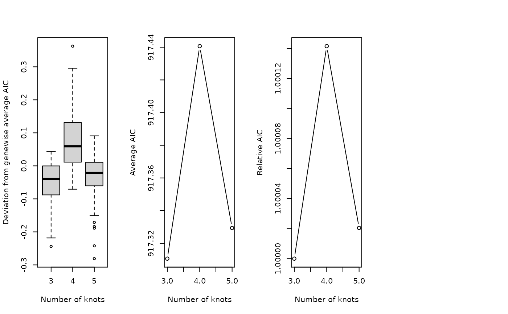

Evaluate an appropriate number of knots.
plot_evalutateK_results(aicMat, k = NULL, aicDiff = 2)
| aicMat | The output from |
|---|---|
| k | The range of knots to evaluate. `3:10` by default. Extracted from the column names by default |
| aicDiff | Used for selecting genes with significantly varying AIC values over the range of evaluated knots to make the barplot output. Default is set to 2, meaning that only genes whose AIC range is larger than 2 will be used to check for the optimal number of knots through the barplot visualization that is part of the output of this function. |
## This is an artificial example, please check the vignette for a realistic one. set.seed(8) data(sds, package="tradeSeq") loadings <- matrix(runif(2000*2, -2, 2), nrow = 2, ncol = 2000) counts <- round(abs(t(slingshot::reducedDim(sds) %*% loadings))) + 100 aicK <- evaluateK(counts = counts, sds = sds, nGenes = 100, k = 3:5, verbose = FALSE, plot = FALSE) plot_evalutateK_results(aicK, k = 3:5)#> NULL